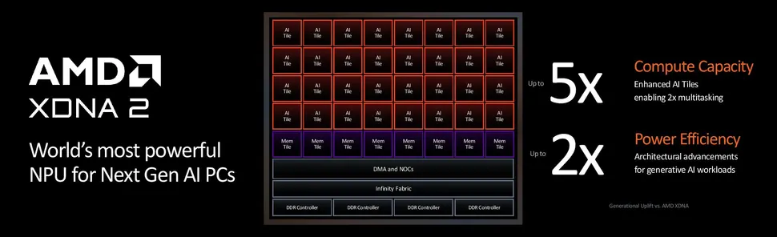

CSE 145 Project Web Presence
SmolVLA on AMD NPU
Make VLA actually deployable offline with AMD NPU

Overview
Abstract
While Vision-Language-Action (VLA) models excel at generalization across different robotics tasks, their reliance on power hungry GPUs make them impractical for edge platforms where resources are more constrained. This led to the exploration of NPU architectures, specifically the AMD Strix Halo Platform with its XDNA 2.5 NPU architecture, because AMD NPUs are known for power-efficient execution of deep learning models. However, maximizing NPU performance remains challenging because of the relatively immature software stack compared to GPUs. VITIS compiler failed to allocate most of the operations to NPU and fell back to CPU. To address this compiler fallback issue, I utilized AMD IRON, close-to-metal API for AMD NPUs, and XRT, to map SmolVLA directly to NPU. When evaluated on the LIBERO Spatial benchmark, this NPU implementation completely matched the FP32 iGPU baseline in terms of task success rate while performing the task 2.7 times faster than the CPU based execution.
Evaluation
Results
| Backend | Success | Time(s/step) |
|---|---|---|
| NPU | 90% | 17.3 |
| iGPU | 90% | 0.36 |
| CPU | N/A | 46.2 |
Interpretation
The NPU implementation and CPU/iGPU baseline were evaluated on the LIBERO Spatial benchmark using the same SmolVLA checkpoint and evaluation path. Both the NPU implementation and the FP32 iGPU baseline achieved a 90% task success rate across 10 LIBERO Spatial episodes, showing that the NPU implementation preserved original SmolVLA success rate. CPU success rate could not be recorded because the whole process will take more than 30 hours due to its slow speed of execution.
For performance, the NPU path averaged about 17.3 seconds per step, compared with about 46.2 seconds per step for CPU execution. This is approximately 2.7x speedup over CPU. The iGPU baseline remained faster at about 0.36 seconds per step.
implementation and replication
Documentation
To prevent the mainpage from getting cluttered with information, I have moved the implementation and replication details to separate documentation page. Please refer to the following link (https://leyuheon1.github.io/smolvla-npu-wiki/) for more information
Course Materials
Artifacts
Team
Project Members
Yuheon Joh
This project is solo project by Yuehon Joh and all the results of this project is made by Yuheon Joh with the help of Codex and Gemini